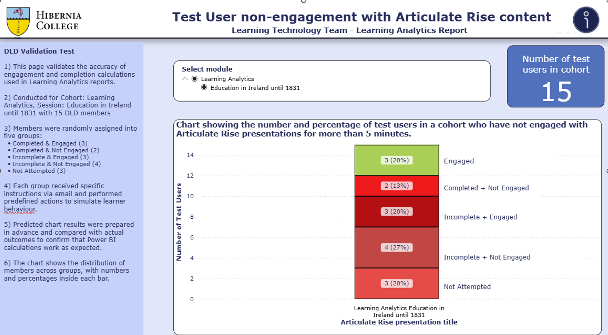

Learning Analytics
Analysing student engagement and learning activity across online course modules using Power BI.
Project Overview
Collaborated on the development of a Learning Analytics Report to examine student engagement across online learning content, including chapters, modules and individual sessions. The report provided visibility into engagement patterns and course activity to help faculty better understand how students interacted with learning materials.
My Contributions
- Collaborated with a colleague throughout the development of the Learning Analytics Report.
- Prepared and transformed learning activity data for reporting and analysis.
- Developed Power BI visualisations to present engagement patterns across modules, chapters and sessions.
- Organised modules based on their release dates to support meaningful reporting.
- Validated report outputs using Excel, Python and Power BI.
- Supported report testing with users from the DLD team.
Dashboard Highlights
- Student engagement across learning chapters and modules
- Engaged and non-engaged student comparisons
- Session-level engagement analysis
- Module organisation based on release dates
- Engagement reporting across selected cohorts and modules
Dashboard Screenshots
Overall Learning Analytics Dashboard
An overview of student engagement across learning content, with cohort and module-level insights.

Session-Level Engagement Analysis
A closer look at engaged and non-engaged student activity across individual learning sessions.

Tools and Technologies
- Business Intelligence: Power BI
- Data Modelling and Calculations: DAX
- Data Preparation: Power Query, Microsoft Excel
- Data Validation: Python, Excel, Power BI
- Data Management: SharePoint
Project Outcome
Developed a consolidated view of student engagement across online learning content, providing greater visibility into activity at module, chapter and session levels. The report supported the evaluation of learning engagement and helped identify areas for further review of course structure and student interaction.
Note: Selected dashboard visuals are displayed for portfolio purposes. The original Power BI report and underlying organisational data are not shared publicly.